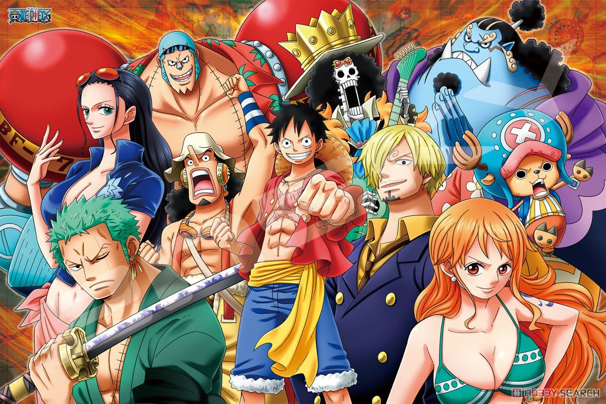

Sobre o One Piece
Anime produzido pela Toei Animation e transmitido pela Fuji Television baseado no mangá com o mesmo nome. O primeiro episódio foi ao ar no Japão no dia 20 de outubro de 1999. O programa ainda continua indo para seu episódio 1.026.
Esse anime segue a história de Luffy e seu grupo de piratas. Luffy pretende se tornar o Rei dos Piratas e para isso deve encontrar o One Piece, tesouro misterioso capaz de torná-lo imbatível, segundo as lendas.
Ao longo da história, Luffy foi conquistando seus nakamas (companheiros), formando assim os Piratas do Chapéu de Palha ou só Chapéus de Palha que vivem muitas aventuras em cada ilha que passam.
Piratas do Chapéu de Palha
